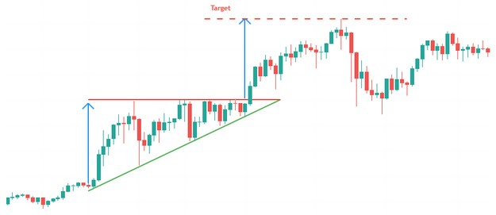
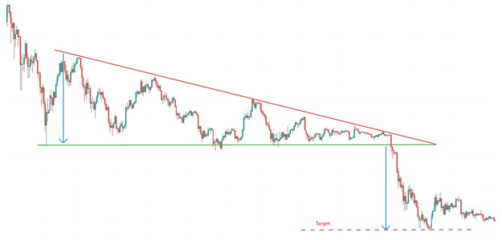

- Figures chartistes : Le Triangle -
Le triangle est une figure chartiste de continuation. La figure est formée par deux droites convergentes.
L'objectif de cours d'un triangle ascendant est déterminé par la hauteur de la base du triangle que l'on reporte au point de cassure.
Validité :
Chacune de ces droites doit avoir été touchées au minimum 2 fois.
La ligne est dite "valide" si le cours la touche au moins 3 fois en support ou en résistance.
Triangle ascendant

Triangle descendant

62% la sortie est haussière.
75% c'est une figure de continuation.
75% l'objectif de cours est atteint lorsque la résistance est cassée à la hausse.
60% le cours effectue après sortie un pullback en support sur la ligne de résistance.
25% le cours fait apparaitre de fausses cassures de lignes, ou fausses sorties de triangle.
54% la sortie est baissière.
61% c'est une figure de continuation.
54% l'objectif de cours est atteint lorsque le support est cassée à la baisse.
64% le cours effectue après sortie un pullback en résistance sur la ligne de support.
Plus de la moitié du temps, lorsqu'une fausse cassure intervient par le bas, la sortie se fait finalement par le haut. En revanche, les fausses cassures par le haut sont rares avec seulement 6%.
- La sortie se fait le plus souvent au 2/3 du triangle. C'est le niveau de sortie qui offre les meilleures performances.
- L'objectif de cours du triangle est généralement atteint avant la pointe du triangle.
- Les fausses cassures ne donnent aucune indication quand au véritable sens de sortie.
- Eviter de prendre position si la cassure/sortie intervient avant les 2/3 du triangle.
- Les pullbacks sont néfastes pour la performance.